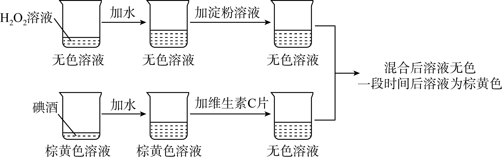
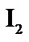
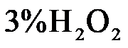
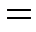
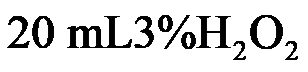

2023年北京中考化学 第38题
38. 下图是一个趣味变色实验，同学们对混合后溶液变色时间的影响因素进行探究。

资料：碘酒为碘(

)的乙醇溶液；淀粉遇变蓝，在本实验中作为指示剂，指示是否存在。【进行实验】向烧杯A中加入一定体积的

溶液、水和淀粉溶液。向烧杯B中加入一定体积的碘酒、水和2粒维生素C片，将两只烧杯中的溶液混合，记录混合后溶液由无色变为蓝色的时间。
序号 | 烧杯A | 烧杯B | 变色时间 |
 溶液体积 溶液体积
| 溶液总体积 | 碘酒体积 | 溶液总体积 |
① | 10 | 32 | 2 | 25 | 595 |
② | 10 | 32 | 5 | 25 | 193 |
③ | 10 | 32 | 10 | 25 | 39 |
④ | 5 | 32 | 5 | 25 | 399 |
⑤ | 20 | 32 | 5 | 25 | 78 |
说明：本实验中，溶液总体积可看作是各液体的体积之和
 解释与结论】
解释与结论】
（1）溶液中，溶质是_____；
（2）①②③的目的是_____。
（3）由②④⑤可以得到的结论是_____。
（4）①中，若将碘酒体积改为，则混合后溶液变色时间_____(填“”或“”或“

”)。【继续实验】
（5）补做实验证明了维生素C用量对混合后溶液变色时间也有影响。实验方案：向烧杯A中加入

溶液、水、淀粉溶液，_____。（6）同学们进一步证明了与维生素C能发生反应，实验是向烧杯中依次加入碘酒、水、淀粉溶液，再加入维生素C片，实验过程中观察到_____。